Lee el código antes de atacarlo.
Este laboratorio analiza un proyecto real con SonarQube, Semgrep y la auditoría de dependencias, y luego pide demostrar cada corrección con una prueba. Sirve con Secure CRM o con cualquier repositorio git que puedas ejecutar en local.
- SAST
- SonarQube y Semgrep leen el código sin ejecutarlo.
- SCA
- npm, pnpm, yarn o pip-audit. Dependency-Check es opcional.
- DAST
- El paso 8 pide un escaneo con ZAP. El tutorial de la interfaz, Burp y CVSS está en el laboratorio DAST.
Reglas del laboratorio
Ninguna herramienta ve todo. El trabajo es comprobar qué encuentra cada una, qué se le escapa y por qué se usan juntas.
- Levantar SonarQube con Docker y dejar el Quality Gate “Curso Desarrollo Seguro” como predeterminado.
- Ejecutar SAST, análisis de dependencias y un escaneo dinámico, y clasificar los hallazgos con CWE, OWASP Top 10:2025 y CVSS v3.1.
- Distinguir un hallazgo real, un falso positivo y un riesgo aceptado, y justificarlo.
- Corregir en el código y demostrar la corrección con una prueba de regresión.
- Analizar solo tu proyecto, corriendo en tu máquina. Nunca producción ni sistemas de terceros.
- Ningún secreto (token, API key, contraseña) va en archivos del repositorio, capturas ni reportes. Se usan variables de entorno.
- Si haces Dependency-Check, pide la API key del NVD en clase y guárdala en una variable de entorno. No la publiques.
El compose de SonarQube está en esta carpeta: docker-compose.yml. Levántalo desde docs/sast, no desde la raíz de Secure CRM. Ese otro compose arranca la aplicación, no SonarQube.
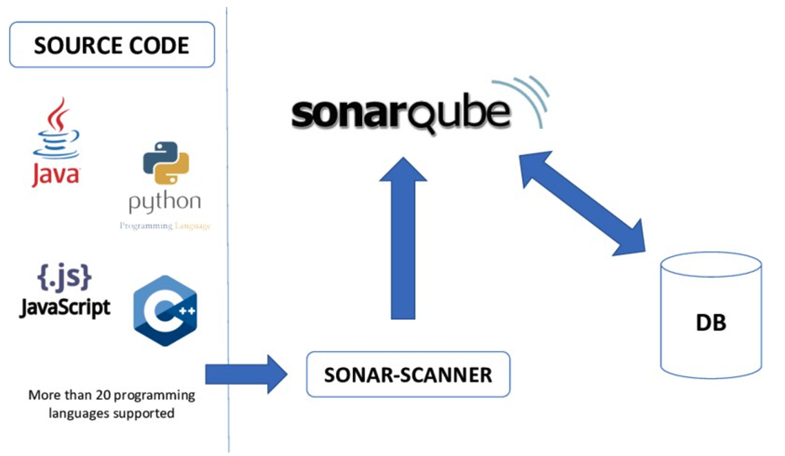
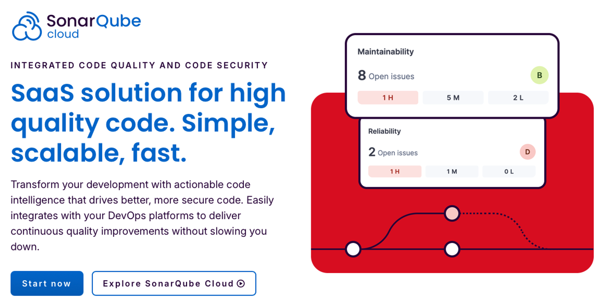
Fase 1 · Analizar
Analiza la seguridad de tu proyecto y clasifica cada hallazgo para decidir qué corregir. El proyecto debe estar en git, con el código en commits, y debe poder ejecutarse en local. Si tiene front y API, puedes analizarlos en un solo proyecto de SonarQube o en uno por componente.
Sigue los pasos del 0 al 9 con el botón Siguiente. Esta tabla dice qué se califica y cuánto vale. No la uses como recorrido: la columna Guías repite pasos porque la nota se arma al final. El paso 8, ZAP, vale 30 %. El tutorial de su interfaz está en el laboratorio DAST y la aplicación tiene que estar corriendo; en Secure CRM el arranque está en el inicio. La clasificación, el CVSS y el PDF se hacen una sola vez, en el paso 9, cuando ya tienes SonarQube, Semgrep, dependencias y ZAP.
| # | Actividad | Guías | % |
|---|---|---|---|
| 1 | Instalación y configuración de SonarQube. Compose de esta guía, clave de admin cambiada y Quality Gate “Curso Desarrollo Seguro” como predeterminado. | Pasos 0–2 | 10 |
| 2 | Proyecto creado, New Code = Previous version, sonar-project.properties con projectVersion=fase1 y exclusiones. El token nunca en archivos. | Pasos 3–4 | 10 |
| 3 | Análisis de SonarQube, Semgrep importado a SonarQube y auditoría de dependencias con el comando de tu gestor de paquetes. | Pasos 4, 6 y 7 | 15 |
| 4 | DAST con ZAP. Baseline y full scan, o API scan, sobre la aplicación local. Alertas altas y medias relacionadas con su código. | Paso 8 | 30 |
| 5 | Cada hallazgo con CWE, OWASP Top 10:2025 y decisión (corregir, aceptar o falso positivo). Dependencias priorizadas por alcanzabilidad. Comparación SAST y DAST. | Paso 9 | 10 |
| 6 | Corrección propuesta para cada hallazgo que marques como corregir. | Paso 9 | 10 |
| 7 | Reporte con la plantilla: hallazgos, CVSS v3.1 de cada vulnerabilidad real, justificación de aceptados y falsos positivos, y respuestas a las preguntas. | Paso 9 | 15 |
Accept y False Positive sin justificación cuentan como hallazgos no resueltos. Un secreto en el repositorio, en una captura o en el reporte descuenta puntos en la actividad 2. El “Passed” de “Sonar way” no cuenta. El que vale es “Curso Desarrollo Seguro”.
| Actividad | Pts |
|---|---|
| Dependency-Check: ejecutarlo, importarlo a SonarQube con el plugin y compararlo con la auditoría del gestor de paquetes. | 5 |
| Importar el proyecto a SonarQube por medio de GitHub Apps. La documentación está en SonarQube Community Build, integración con GitHub. | 10 |
- Reporte completo, con la plantilla, en PDF.
- Capturas del dashboard de SonarQube, línea base fase1.
- Reportes de las herramientas: semgrep.sarif, salida de la auditoría y reporte-zap.html.
- Enlace al repositorio con sonar-project.properties.
Requisitos e instalación
Instala Docker Desktop, abre Settings, Resources, y asigna al menos 4 GB de memoria. SonarQube y PostgreSQL la necesitan juntos. Descargar las imágenes en clase satura la red.
docker pull sonarqube:community
docker pull postgres:17
docker pull ghcr.io/zaproxy/zaproxy:stable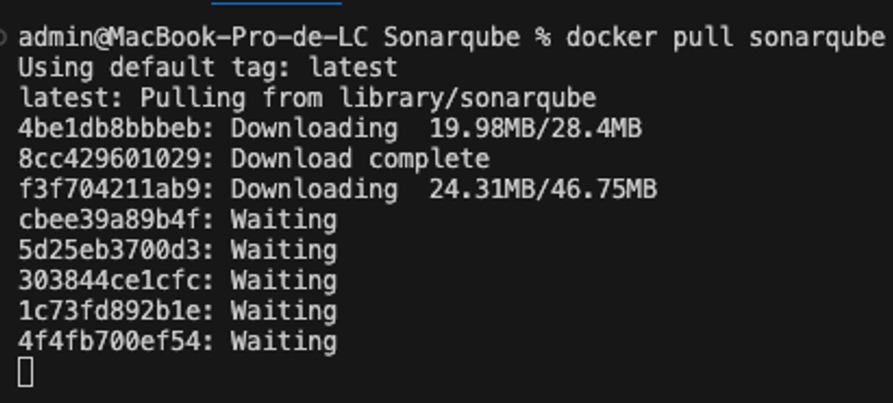
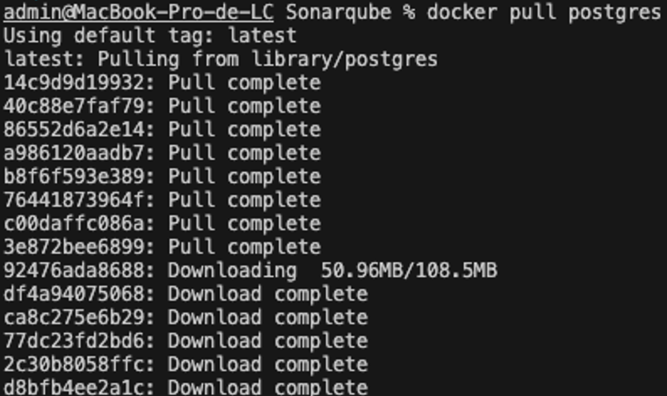
En Linux, antes de levantar SonarQube: sudo sysctl -w vm.max_map_count=524288. Lo exige el Elasticsearch interno.
Elige una opción. Revisa tu Node con node -v.
| Opción | Cuándo | Instalación |
|---|---|---|
| A. npx | JS/TS con Node 22.12 o superior | Nada que instalar: npx @sonar/scan |
| B. Docker | Cualquier stack, o Node más viejo | docker pull sonarsource/sonar-scanner-cli |
| C. CLI | Si prefieres un binario local | macOS: brew install sonar-scanner. Otros: descarga el SonarScanner de la documentación de SonarQube Community Build. |
| Sistema | Instalación |
|---|---|
| macOS | brew install semgrep |
| Linux / WSL | python3 -m pip install semgrep |
| Windows, o si lo anterior falla | docker pull semgrep/semgrep |
| Tu proyecto | Herramienta | ¿Instalar? |
|---|---|---|
| npm (package-lock.json) | npm audit | No |
| pnpm (pnpm-lock.yaml) | pnpm audit | No |
| yarn | yarn npm audit (v2+) o yarn audit (v1) | No |
| Python (requirements.txt) | pip-audit | python3 -m pip install pip-audit |
Requiere Java 11 o superior y la API key del NVD. Pídela en clase. En macOS: brew install dependency-check. La primera ejecución descarga la base del NVD y tarda unos 20 minutos. Hazla antes del paso 7.
Elige un solo framework en el paso 10. JS/TS con Vite: Vitest y @vitest/coverage-v8. JS/TS en general, incluido Secure CRM: Jest. Python: pytest y pytest-cov. No hace falta instalarlo antes de la Fase 2.
Debe estar en git y con el código en commits: Semgrep solo analiza archivos con commit. Debe poder ejecutarse en local, porque el paso 8 escanea la aplicación en marcha. Secure CRM cumple las dos condiciones. El arranque está en el inicio.
docker --version
docker compose version
node -v # si usas npx: 22.12 o superior
semgrep --version # o: docker run --rm semgrep/semgrep semgrep --version
git status # dentro de tu proyectoEn PowerShell los comandos son los mismos. Donde esta guía use export VAR=valor, escribe $env:VAR="valor". Donde use $(pwd), escribe ${PWD}.
- Docker responde y tiene al menos 4 GB de RAM.
- Imágenes de SonarQube, PostgreSQL y ZAP descargadas.
- Semgrep y el escáner de SonarQube elegidos.
- El proyecto está en git y se puede ejecutar en local.
Levantar SonarQube
Inicia SonarQube y PostgreSQL con el compose de esta carpeta. Tarda entre 1 y 3 minutos. Cuando veas “SonarQube is operational”, sal con Ctrl+C.
cd docs/sast
docker compose up -d
docker compose ps
docker compose logs -f sonarqube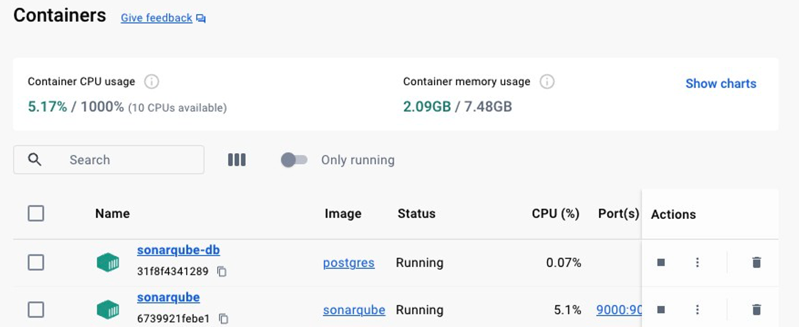
Abre http://localhost:9000. Usuario admin, clave admin. SonarQube obliga a cambiarla. Anótala: la necesitas para administrar tu instancia. Deben existir los contenedores sonarqube y postgresql.
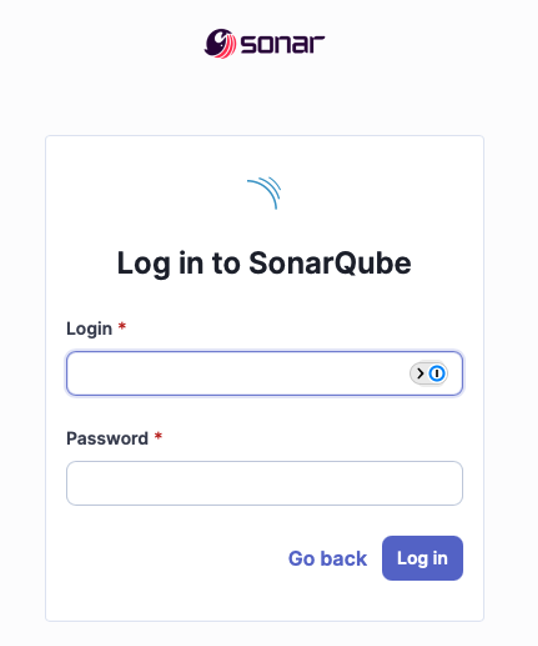
- docker compose ps muestra los dos contenedores.
- Entré a http://localhost:9000.
- Cambié la clave de admin.
La base embebida de SonarQube no sirve para este laboratorio. Por eso el compose trae PostgreSQL. docker compose down conserva los volúmenes. docker compose down -v los borra y te deja empezar de cero.
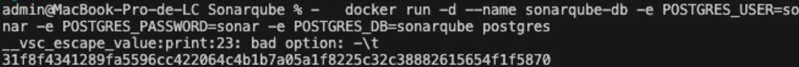
Configurar el Quality Gate
Crea el Quality Gate Curso Desarrollo Seguro y márcalo como Default. Es el que usa el resto del laboratorio.
Un Quality Gate decide si el proyecto pasa o falla. “Sonar way”, el que viene de fábrica, solo mira el código nuevo. En el primer análisis todavía no hay código nuevo, así que el proyecto sale Passed aunque tenga vulnerabilidades graves. El gate que vas a crear revisa la seguridad de todo el código, y la cobertura solo de lo que cambies en la Fase 2.
Menú superior, Quality Gates, Create. Nombre: Curso Desarrollo Seguro. Si avisa que no es “Clean as You Code”, ignóralo. Add Condition, estas tres:
| Alcance | Métrica | Operador | Valor |
|---|---|---|---|
| On Overall Code | Security Rating | is worse than | A |
| On Overall Code | Security Hotspots Reviewed | is less than | 100 |
| On New Code | Coverage | is less than | 70 |
Si el gate se creó con condiciones precargadas, déjalas. Arriba a la derecha, Set as Default. La cobertura queda en “On New Code”: en la Fase 2 se mide lo que cambies, con al menos 70 %.
- Quality Gate “Curso Desarrollo Seguro” con sus 3 condiciones.
- Marcado como Default.
Solo si vas por el extra. Administration, Marketplace. La primera vez marca “I understand the risk”. Busca Dependency-Check, Install. Quedará en Install Pending hasta que pulses Restart Server y esperes 1 o 2 minutos. Verifica en Installed que ya no diga Pending. Si no aparece el botón: docker compose restart sonarqube.
Si el Marketplace no carga, descarga el .jar del plugin dependency-check-sonar-plugin y cópialo al contenedor:
docker cp sonar-dependency-check-plugin-*.jar sonarqube:/opt/sonarqube/extensions/plugins/
docker compose restart sonarqube- Opcional: plugin Dependency-Check instalado y servidor reiniciado.
Proyecto y token
Create Project, Local project. Display name: el de tu proyecto. Project key: sin espacios, por ejemplo grupo3-tienda. Anótalo. Main branch: main, o la rama que uses. En código nuevo elige Use the global setting y crea el proyecto. Front y API pueden ir en un solo proyecto; la plantilla front-api ya lo contempla.
Dentro del proyecto: Project Settings, New Code, Previous version. En la Fase 2, la pestaña New Code muestra solo lo que cambiaste respecto de la Fase 1.
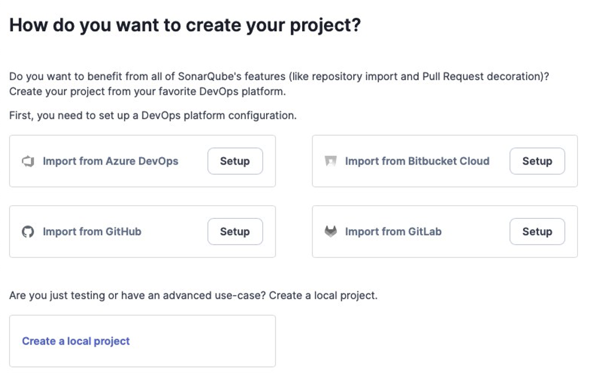
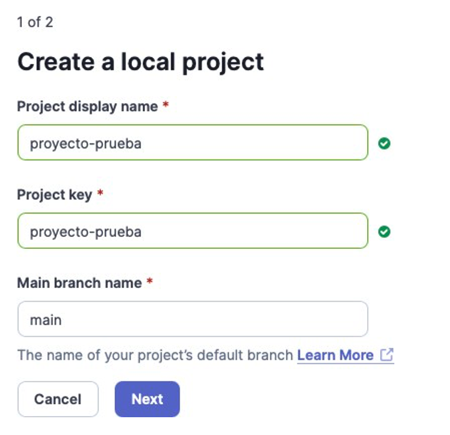
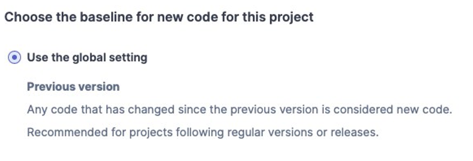
En “How do you want to analyze your repository?” elige Locally. Nombre laboratorio, expiración 30 días. Cópialo ahora: se muestra una sola vez. Si pregunta el tipo de proyecto, elige el tuyo, pero no ejecutes todavía el comando que muestra. El token queda en SONAR_TOKEN y en ningún archivo.
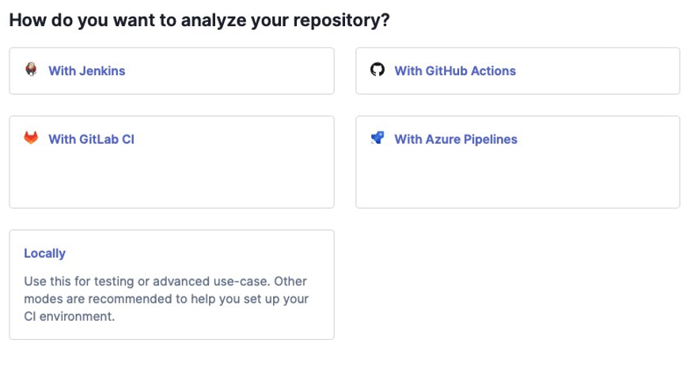
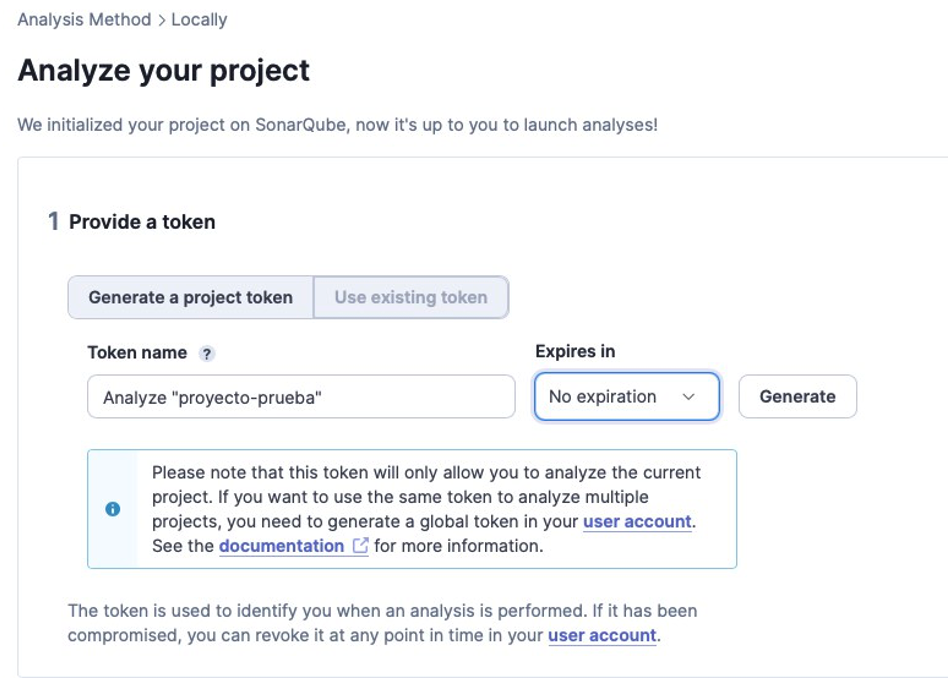
export SONAR_TOKEN="pega_aqui_tu_token"
echo ${SONAR_TOKEN:0:8}$env:SONAR_TOKEN="pega_aqui_tu_token"La variable dura mientras esa terminal esté abierta. Usa la misma terminal en los pasos siguientes. Nunca lo escribas en sonar-project.properties, en el código, en capturas ni en el reporte. Si lo dejas en un archivo, el siguiente análisis lo marca como hallazgo Blocker. Revócalo en My Account, Security, genera otro y cuéntalo en el reporte.
- Proyecto creado y project key anotado.
- New Code = Previous version.
- Token en SONAR_TOKEN, en ningún archivo.
Primer análisis SAST
Copia la plantilla de tu stack a la raíz de tu proyecto con el nombre sonar-project.properties. El escáner debe terminar en EXECUTION SUCCESS y el proyecto aparece en el dashboard.
Este repositorio es front y API. La pestaña abierta ya trae apps/web y apps/api/src. Un solo componente usa la pestaña JavaScript. Python usa la suya. Copia una sola plantilla. El comando de análisis que se ve abajo es npx y pide Node 22.12 o superior. Con el Node 20 del proyecto, abre la pestaña Docker o CLI.
Plantilla: sonar-project.front-api.properties. En Secure CRM el código está en apps/web y apps/api/src. En otro monorepo, cambia esas carpetas.
sonar.projectKey=CAMBIAR-por-tu-project-key
sonar.projectVersion=fase1
sonar.host.url=http://localhost:9000
sonar.sources=apps/web,apps/api/src
sonar.exclusions=**/node_modules/**,**/.next/**,**/build/**,**/dist/**,**/coverage/**,**/reports-dc/**,**/*.test.*,**/*.spec.*,semgrep.sarifPlantilla: sonar-project.js.properties. Ajusta la clave y, si tu código vive en src, cambia sonar.sources.
sonar.projectKey=CAMBIAR-por-tu-project-key
sonar.projectVersion=fase1
sonar.host.url=http://localhost:9000
sonar.sources=.
sonar.exclusions=**/node_modules/**,**/build/**,**/dist/**,**/coverage/**,**/reports-dc/**,**/*.test.*,**/*.spec.*,semgrep.sarifPlantilla: sonar-project.python.properties. Ajusta sonar.python.version.
sonar.projectKey=CAMBIAR-por-tu-project-key
sonar.projectVersion=fase1
sonar.host.url=http://localhost:9000
sonar.sources=.
sonar.python.version=3.12
sonar.exclusions=**/.venv/**,**/venv/**,**/__pycache__/**,**/tests/**,**/test_*.py,**/reports-dc/**,htmlcov/**,coverage.xml,semgrep.sarifEl token no va en este archivo. El archivo sí se sube al repositorio. sonar.projectVersion=fase1 marca la línea base. En la Fase 2 lo cambiarás a fase2 en el paso 10, después de corregir.
Desde la raíz de tu proyecto, en la terminal donde guardaste el token.
npx @sonar/scan -Dsonar.token=$SONAR_TOKENdocker run --rm \
-v "$(pwd):/usr/src" \
sonarsource/sonar-scanner-cli \
-Dsonar.host.url=http://host.docker.internal:9000 \
-Dsonar.token=$SONAR_TOKENEn Linux agrega --add-host=host.docker.internal:host-gateway después de --rm. En PowerShell usa ${PWD} y $env:SONAR_TOKEN.
Desde la raíz de tu proyecto, en la terminal donde guardaste el token.
sonar-scanner -Dsonar.token=$SONAR_TOKEN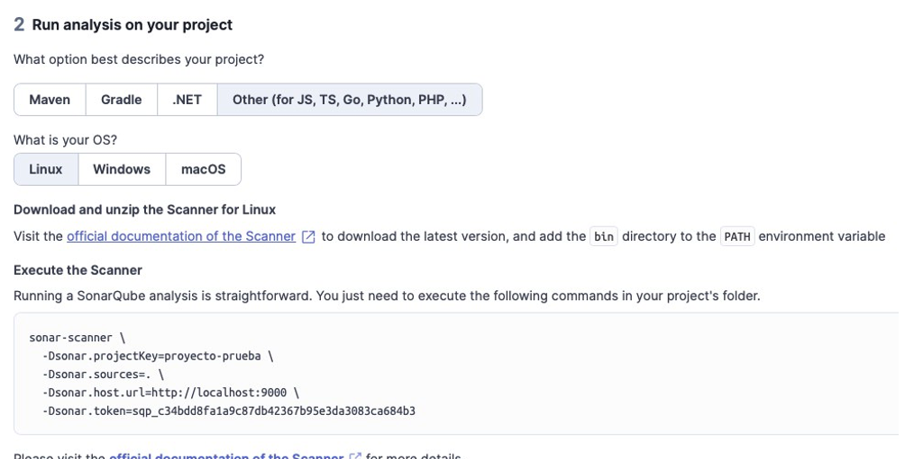
El log termina en EXECUTION SUCCESS. En el dashboard ves Security, Reliability y Maintainability. Coverage en 0 % es normal: se configura en la Fase 2. SonarQube no compila tu código; si un archivo tiene un error de sintaxis grave, lo salta y lo avisa como “Failed to parse”. Si el Quality Gate dice Failed, es el punto de partida: “Curso Desarrollo Seguro” está mirando la seguridad de todo el código.
- sonar-project.properties en la raíz, sin token.
- sonar.projectVersion=fase1.
- Análisis con EXECUTION SUCCESS y captura del dashboard.
Leer un issue
Aquí se aprende a leer un issue de SonarQube. Anota lo que ves. El CVSS, la comparación con las otras herramientas y el PDF se arman en el paso 9, cuando Semgrep, las dependencias y ZAP ya están.
En el proyecto abre Issues. En Software Quality marca Security. Cada hallazgo muestra severidad (Blocker, High, Medium, Low), archivo y línea. Where is the issue? es la evidencia. Why is this an issue? trae, en Resources, las referencias CWE y OWASP. How can I fix it? alimenta la propuesta de corrección del paso 9.
El rating A significa ningún issue de seguridad. E significa al menos un Blocker. Si la pestaña de Security Hotspots está vacía, es esperable en esta versión: muchas reglas aparecen directo como issues.
| Decisión | Cuándo | En SonarQube |
|---|---|---|
| Corregir | El riesgo es real y se puede arreglar | Se deja Open. Se corrige en la Fase 2 |
| Aceptar | El riesgo es real, pero no lo vas a corregir en este laboratorio | Accept, con comentario |
| Falso positivo | La herramienta se equivocó | False Positive, con comentario |
Accept y False Positive bajan el número de issues y pueden mejorar el rating. Cada uno lleva un comentario. Fíltralos en Status, Accepted. Uno sin justificación cuenta como no resuelto.
Anota cada issue de Security: severidad, archivo, línea, CWE y OWASP si ya aparecen en Resources, y una decisión. Si aceptas o marcas falso positivo, el comentario va en SonarQube ahora. Si SonarQube encontró un secreto, anota cómo llegó: borrarlo del archivo lo deja en el historial de git. Esa pregunta se responde en el reporte.
- Issues de Security de SonarQube anotados, con archivo y línea.
- Decisión en cada uno.
- Accept y False Positive comentados en SonarQube.
- El reporte sigue abierto: faltan los pasos 6, 7 y 8.
Semgrep
SonarQube Community no sigue un dato desde la petición hasta una consulta o el HTML. Por eso no marca inyección SQL ni XSS. Semgrep complementa ese hueco. Solo analiza archivos con commit. Si ves “Scan was limited to files tracked by git” y te faltan archivos, haz commit antes de volver a correrlo.
semgrep scan --config p/default --metrics=offdocker run --rm -v "$(pwd):/src" semgrep/semgrep \
semgrep scan --config p/default --metrics=offsemgrep scan --config p/default --metrics=off --sarif -o semgrep.sarifCon Docker, agrega --sarif -o /src/semgrep.sarif. Luego añade esta línea a sonar-project.properties y vuelve a ejecutar el análisis del paso 4. Las plantillas ya excluyen el archivo SARIF del código fuente.
sonar.sarifReportPaths=semgrep.sarifEsos issues cuentan para el rating de Security y para el Quality Gate. Anota qué encontró Semgrep que SonarQube no. La clasificación de las dos listas, junto con dependencias y ZAP, es el paso 9.
- Semgrep ejecutado con el código ya en commits.
- semgrep.sarif importado a SonarQube.
- Anotado qué apareció aquí y en el paso 4 no.
Dependencias
Lista las librerías con vulnerabilidades conocidas, su severidad, el camino que las trae y tu decisión: actualizar, reemplazar o aceptar. Si hay front y API, ejecuta el comando en cada carpeta.
El gestor es pnpm y hay un solo pnpm-lock.yaml en la raíz. Corre pnpm audit --prod ahí. npm audit busca package-lock.json y responde ENOLOCK.
Secure CRM usa pnpm. npm audit aquí falla con ENOLOCK porque busca package-lock.json.
pnpm audit --prodLa salida se anota en el reporte del paso 9. SonarQube incorpora el código, el SARIF de Semgrep, el reporte de Dependency-Check y, en la Fase 2, la cobertura. La auditoría del gestor se queda en ese reporte.
npm audit --omit=devyarn npm audit --environment production # yarn 2 o superior
yarn audit --groups dependencies # yarn 1pip-audit -r requirements.txt
# Poetry o Pipenv: activa el entorno y ejecuta pip-audit--omit=dev y --prod dejan fuera lo que no llega a producción. Mira igual el camino. Una librería crítica que solo se usa al instalar puede ser menos urgente que una moderada que procesa cada petición HTTP. Pregúntate si un atacante puede hacer llegar datos a esa librería. Anota camino, alcanzabilidad y decisión. La tabla del reporte se cierra en el paso 9.
- Auditoría con el comando de tu gestor.
- Hallazgos priorizados por alcanzabilidad, con una decisión cada uno.
Opcional: suma puntos. Útil sobre todo en Java y .NET. En JavaScript a menudo reporta menos que la auditoría del gestor, porque reutiliza los avisos de GitHub y muestra uno por paquete. Comparar ambos resultados es el ejercicio. Necesitas Java 11 o superior, la API key del NVD y el plugin del paso 2.
export NVD_API_KEY="pega_la_key"
mkdir -p reports-dc
dependency-check --project mi-proyecto \
--scan "$(pwd)/pnpm-lock.yaml" \
--format HTML --format JSON \
--out "$(pwd)/reports-dc" \
--nvdApiKey "$NVD_API_KEY"Cambia el archivo de lock por el de tu gestor, o escanea la carpeta del proyecto. En Python agrega --enableExperimental. La carpeta de salida debe existir y la ruta conviene absoluta. La primera ejecución tarda unos 20 minutos. No pegues la key en el historial si puedes evitarlo: usa la variable.
Para que SonarQube lo detecte, descomenta estas líneas en sonar-project.properties y vuelve a ejecutar el análisis del paso 4. Las plantillas ya las traen comentadas. Sin el plugin del paso 2, SonarQube ignora las propiedades. Tras el reanálisis, los hallazgos salen en Issues, como vulnerabilidades del plugin. Si configuraste htmlReportPath, el HTML queda enlazado en el proyecto.
sonar.dependencyCheck.jsonReportPath=reports-dc/dependency-check-report.json
sonar.dependencyCheck.htmlReportPath=reports-dc/dependency-check-report.html- Opcional: reporte generado, propiedades descomentadas y análisis del paso 4 repetido.
- Opcional: hallazgos en Issues, comparados con la auditoría del gestor.
Escaneo dinámico con ZAP
Ataca la aplicación mientras corre, para ver lo que el análisis estático no ve. El resultado es reporte-zap.html, con las alertas altas y medias. Ese HTML se entrega junto al PDF. En el paso 9, cada alerta se anota con su URL, su parámetro y la línea de código que la causa, al lado de lo que ya registraron SonarQube y Semgrep. SonarQube Community incorpora al dashboard los reportes que señalan archivos del repositorio; un HTML de ZAP señala URLs, y por eso se archiva con la entrega.
Solo contra tu aplicación, en tu máquina. El escaneo activo puede crear o borrar datos. Usa una base de prueba. El tutorial de la interfaz de ZAP, de Burp Suite y de la calculadora CVSS está en el laboratorio DAST. Aquí va el escaneo por Docker.
| Escaneo | Qué hace | Qué encuentra |
|---|---|---|
| Baseline | Solo observa las respuestas | Cabeceras, cookies, información expuesta |
| Full scan | Prueba los parámetros que encuentra | Lo que el baseline no puede ver porque no interactúa |
| API scan | Parte de una especificación OpenAPI | Lo mismo, orientado a una API |
El baseline no sustituye al full scan. Si solo corres baseline, el reporte puede verse limpio sin estarlo. Levanta la aplicación y anota su URL. En Secure CRM es http://localhost:3000.
docker run --rm -v "$(pwd):/zap/wrk/:rw" -t ghcr.io/zaproxy/zaproxy:stable \
zap-full-scan.py -t http://host.docker.internal:3000 -r reporte-zap.htmlPara el baseline, cambia zap-full-scan.py por zap-baseline.py. En Linux agrega --add-host=host.docker.internal:host-gateway después de --rm. Si las rutas piden login, configura un contexto con usuario; si no, solo verás lo público.
docker run --rm -v "$(pwd):/zap/wrk/:rw" -t ghcr.io/zaproxy/zaproxy:stable \
zap-api-scan.py -t http://host.docker.internal:3000/openapi.json \
-f openapi -r reporte-zap.htmlSi la API no tiene OpenAPI, el spider no encuentra endpoints: usa la interfaz de ZAP o Burp como proxy mientras recorres la aplicación. En Linux agrega --add-host=host.docker.internal:host-gateway después de --rm.
Para cada alerta alta o media abre la evidencia y busca la línea en tu código. Los reportes de ZAP no se importan a SonarQube: sus hallazgos son URLs, no líneas. La comparación con SonarQube y Semgrep se escribe en el paso 9.
- Baseline y full scan, o API scan, sobre tu aplicación local.
- Reporte de ZAP guardado.
- Cada alerta alta o media relacionada con su código.
- Alertas altas y medias anotadas, listas para el paso 9.
Clasificar y reportar
Ya están los cuatro resultados: issues de SonarQube, issues de Semgrep, auditoría de dependencias y alertas de ZAP. El paso 5 enseñó a leer un issue. Este paso junta todo en la plantilla y cierra la Fase 1.
Una fila por hallazgo en la plantilla. La fuente es SonarQube, Semgrep, Auditoría, Dependency-Check o ZAP. Las decisiones son las del paso 5: corregir, aceptar o falso positivo. Accept y False Positive llevan el comentario que ya escribiste en SonarQube, o uno equivalente si la fuente es otra herramienta.
En cada hallazgo marcado corregir, escribe la corrección que aplicarías. En la Fase 1 es una propuesta. El código se cambia en el paso 10. Para ZAP, la fila cruza la alerta (URL y parámetro) con la línea que la causa y dice si SonarQube o Semgrep ya la habían visto.
- Las cuatro fuentes están en la misma tabla.
- Cada fila tiene CWE, OWASP Top 10:2025 y decisión.
- Dependencias con camino, alcanzabilidad y decisión.
- Propuesta de corrección en cada hallazgo a corregir.
Para cada vulnerabilidad real arma el vector en la calculadora CVSS v3.1 y explica cada métrica. El tutorial de las ocho métricas está en el laboratorio DAST. Un riesgo aceptado y un falso positivo también se justifican, en su tabla aparte. El CVSS corresponde a las vulnerabilidades reales.
| Ejemplo | Vector | Puntaje |
|---|---|---|
| Inyección SQL de solo lectura | CVSS:3.1/AV:N/AC:L/PR:N/UI:N/S:U/C:H/I:N/A:N | 7.5 Alta |
| XSS reflejado | CVSS:3.1/AV:N/AC:L/PR:N/UI:R/S:C/C:L/I:L/A:N | 6.1 Media |
Copia la plantilla a tu repositorio, complétala y expórtala a PDF. Responde las preguntas de la sección 6. La de Sonar way y la del secreto salen de lo que viste en los pasos 2 y 5. Junto al PDF van las capturas del dashboard con projectVersion=fase1, semgrep.sarif, la salida de la auditoría y reporte-zap.html.
- CVSS v3.1 de cada vulnerabilidad real.
- Justificación de cada aceptado y cada falso positivo.
- Comparación SAST y DAST, y la reflexión de qué vio cada herramienta.
- PDF, capturas y reportes de herramientas listos para entregar.
Fase 2 · Corregir y demostrar
Corrige lo que marcaste como “corregir”, demuestra cada corrección con una prueba automatizada y compara contra la línea base. El cómo está en el paso 10, en este orden: un solo framework, prueba en rojo, corrección, prueba en verde, projectVersion=fase2, y al final el reanálisis con SonarQube.
| # | Actividad | % |
|---|---|---|
| 1 | Corregir en el código las vulnerabilidades marcadas en la Fase 1 y actualizar o reemplazar las dependencias vulnerables alcanzables. Las correcciones van en el código, no solo en la configuración de las herramientas. Análisis con sonar.projectVersion=fase2. | 45 |
| 2 | Al menos una prueba por vulnerabilidad corregida. Falla antes de la corrección y pasa después. Cobertura importada a SonarQube, 70 % o más en el código nuevo. | 35 |
| 3 | Repetir el escaneo de ZAP de la Fase 1 sobre la versión corregida y comparar las alertas. | 5 |
| 4 | La misma plantilla, con la columna Fase 2 y la tabla de correcciones: corrección, prueba y commit de cada una. | 15 |
El objetivo es el Quality Gate “Curso Desarrollo Seguro” en Passed. Si no llega a Passed, explica qué condición falla. La cobertura que cuenta es la del código nuevo, no la del proyecto completo. Un hallazgo que la herramienta sigue marcando después de corregirlo se marca False Positive solo si la prueba demuestra que la corrección funciona. Un commit por corrección, con un mensaje que nombre el hallazgo.
- Reporte final en PDF.
- Capturas de New Code, Overall Code y el Quality Gate.
- Reporte de ZAP antes y después.
- Enlace al repositorio con las pruebas y los commits.
- Presentación: qué encontró cada herramienta, qué corrigieron, cómo lo demostraron y qué aprendieron.
Corregir, probar y volver a analizar
Quality Gate en Passed, cobertura del código nuevo de al menos 70 %, y menos hallazgos de seguridad que en la Fase 1, con evidencia del antes y el después.
pnpm, web en apps/web y API en apps/api/src. El repositorio todavía no trae pruebas. Abre una sola pestaña de framework: Jest en este proyecto. Vitest corresponde a un proyecto con Vite. pytest corresponde a Python. Las plantillas cuentan los archivos de src aunque ninguna prueba los toque. Si el include no coincide con tus carpetas, la cobertura sale inflada.
Copia jest.config.js junto al package.json de cada app. En Secure CRM instálalo con pnpm. El script test:coverage se agrega en cada app: la raíz del repositorio no lo tiene.
pnpm --filter @secure-crm/web add -D jest
pnpm --filter @secure-crm/api add -D jest"test:coverage": "jest --coverage"La plantilla mira src/**. En la API eso coincide. En la web cambia collectCoverageFrom para incluir app, components y lib. Descomenta esta línea en sonar-project.properties, en la raíz del repositorio, antes del análisis. La plantilla front+API ya la trae comentada.
sonar.javascript.lcov.reportPaths=apps/web/coverage/lcov.info,apps/api/coverage/lcov.infoJest escribe en lcov.info rutas relativas a la app, por ejemplo app/page.tsx o src/index.ts. SonarQube, lanzado desde la raíz, indexa apps/web/... y apps/api/src/.... Si el log dice que no pudo resolver rutas del LCOV, la cobertura queda en 0 % aunque la propiedad esté bien. Abre el lcov.info y confirma que cada SF: coincide con un archivo bajo sonar.sources. Si falta el prefijo, antepone apps/web/ o apps/api/.
Para un proyecto con Vite. La versión de @vitest/coverage-v8 tiene que ser exactamente la de vitest. Si no coinciden, las pruebas pasan y la cobertura falla. Copia vitest.config.ts a la raíz del paquete y ajusta include a tus carpetas.
pnpm list vitest
pnpm add -D @vitest/coverage-v8@LA_MISMA_VERSION"test:coverage": "vitest run --coverage"Descomenta esta línea en sonar-project.properties antes del análisis. La plantilla JS ya la trae comentada. Corre pnpm test:coverage en la carpeta donde agregaste el script, para que exista coverage/lcov.info.
sonar.javascript.lcov.reportPaths=coverage/lcov.infoCopia .coveragerc a la raíz.
python3 -m pip install pytest pytest-cov
pytest --cov --cov-report=xmlDescomenta esta línea en sonar-project.properties antes del análisis. La plantilla Python ya la trae comentada. relative_files = True en .coveragerc deja las rutas del XML como las indexa SonarQube.
sonar.python.coverage.reportPaths=coverage.xmlCon el framework elegido, el trabajo sigue este orden.
Prueba en rojo
Escribe una prueba que ejercite el flujo del hallazgo. Debe fallar mientras la vulnerabilidad siga en el código.
Corrección
Cambia el código: consulta parametrizada, salida codificada, lista de orígenes permitidos, verificación de firma, o el arreglo que corresponda.
Prueba en verde y commit
La misma prueba ahora pasa. Un commit por corrección, con un mensaje que nombre el hallazgo. Para dependencias, actualiza o reemplaza y repite la auditoría del paso 7.
it("describe el hallazgo que estás cerrando", async () => {
const respuesta = await request(app).get("/ruta").query({ q: valorDePrueba });
expect(respuesta.status).toBe(200);
expect(JSON.stringify(respuesta.body)).not.toContain("dato-sensible");
});Cuando las correcciones ya están en commits, cambia la versión una sola vez en sonar-project.properties, justo antes del análisis final. En el mismo archivo, descomenta la propiedad de cobertura de la pestaña de tu framework. SonarQube no ejecuta pruebas: solo lee el reporte. Si esa línea sigue comentada, la cobertura queda en 0 %.
sonar.projectVersion=fase2SonarQube lee los reportes de las demás herramientas, así que va al final. La propiedad de cobertura ya tiene que estar descomentada. Mientras la versión siga en fase2, New Code se compara contra la Fase 1. En Secure CRM, test:coverage se corre en cada app: la raíz no tiene ese script.
# 1. Pruebas y cobertura, en cada app
pnpm --filter @secure-crm/web test:coverage
pnpm --filter @secure-crm/api test:coverage
# Un solo paquete: pnpm test:coverage en la carpeta del script
# Python: pytest --cov --cov-report=xml
# 2. Semgrep
semgrep scan --config p/default --metrics=off --sarif -o semgrep.sarif
# 3. Auditoría de dependencias
pnpm audit --prod
# 4. Opcional: Dependency-Check, el mismo comando del paso 7
# 5. SonarQube
npx @sonar/scan -Dsonar.token=$SONAR_TOKEN
# 6. ZAP, el mismo comando del paso 8| Dónde | Qué revisar |
|---|---|
| New Code | Cobertura de al menos 70 % y cero issues nuevos |
| Overall Code | Cuántos issues de seguridad bajaron respecto de la Fase 1 |
| Quality Gate | Passed |
| ZAP | Repite el paso 8 y compara las alertas con el reporte de la Fase 1 |
Si una herramienta sigue marcando algo que ya corregiste, verifica con la prueba que la corrección funciona y márcalo False Positive con su justificación.
- Un solo framework, el de tu stack.
- Una prueba por vulnerabilidad corregida, en rojo y luego en verde.
- sonar.projectVersion=fase2 después de los commits de corrección.
- Propiedad de cobertura descomentada en sonar-project.properties e importada. Si usas Vitest, la misma versión exacta.
- Dependencias actualizadas y auditoría repetida.
- Herramientas en orden, SonarQube al final, y ZAP repetido.
- New Code con cobertura de al menos 70 % y Quality Gate en Passed.
Checklist
- SonarQube corriendo y clave de admin cambiada.
- Quality Gate “Curso Desarrollo Seguro” como predeterminado.
- Plugin Dependency-Check, si vas por el extra.
- Token en variable de entorno, no en archivos.
- projectVersion=fase1 y exclusiones.
- Semgrep ejecutado e importado.
- Auditoría priorizada por riesgo real.
- ZAP: baseline y full scan sobre tu aplicación local.
- Paso 9: las cuatro fuentes con CWE, OWASP y decisión.
- Reporte con CVSS v3.1 de cada vulnerabilidad real.
- Un solo framework y una prueba por vulnerabilidad corregida.
- projectVersion=fase2 después de corregir.
- Cobertura importada; código nuevo de al menos 70 %.
- Dependencias actualizadas y auditoría repetida.
- ZAP repetido sobre la versión corregida.
- Quality Gate “Curso Desarrollo Seguro” en Passed.
- Reporte con el antes y el después.
Problemas frecuentes
| Síntoma | Qué hacer |
|---|---|
| Read-only file system y SonarQube se detiene | Usa el docker-compose.yml de esta carpeta. |
| El contenedor se reinicia | Sube la memoria de Docker a 4 GB o más. |
| vm.max_map_count en Linux | sudo sysctl -w vm.max_map_count=524288 |
| El plugin dice Install Pending | Restart Server, o docker compose restart sonarqube. |
| El Marketplace no carga | Instala el .jar a mano, como en el paso 2. |
| El puerto 9000 está ocupado | Cambia "9000:9000" por "9001:9000" y abre el puerto 9001. |
| Síntoma | Qué hacer |
|---|---|
| 401 / Not authorized | Vuelve a exportar SONAR_TOKEN en esa terminal. |
| Error de motor o ESM con npx | Node menor a 22.12. Usa Docker o el CLI. |
| El escáner Docker no conecta | Usa host.docker.internal, no localhost. En Linux agrega --add-host. |
| Blocker por token de SonarQube | Revoca el token, genera otro y quítalo del archivo. |
| Passed en el primer análisis, con vulnerabilidades | Estás en “Sonar way”. Crea el gate “Curso Desarrollo Seguro” y márcalo como Default. |
| Un archivo no aparece | Busca “Failed to parse” en el log: SonarQube saltó un error de sintaxis. |
| Analizó node_modules | Revisa sonar.exclusions. |
| Síntoma | Qué hacer |
|---|---|
| Semgrep analiza menos archivos | Solo ve archivos con commit. Haz commit y vuelve a correrlo. |
| Semgrep no aparece en SonarQube | Agrega sonar.sarifReportPaths=semgrep.sarif y reanaliza. |
| npm ERR! code ENOLOCK | El proyecto no es de npm. Usa el comando de tu gestor. |
| Dependency-Check: la ruta de salida no existe | mkdir -p reports-dc y --out "$(pwd)/reports-dc". |
| Dependency-Check tarda 20 minutos | Es la primera descarga del NVD. Las siguientes son rápidas. |
| Dependency-Check no aparece en SonarQube | Instala el plugin del paso 2, descomenta sonar.dependencyCheck.jsonReportPath y reanaliza. |
| fetchCache al medir cobertura | @vitest/coverage-v8 y vitest tienen versiones distintas. |
| Coverage 0 % en SonarQube | Descomenta la propiedad del paso 10 en sonar-project.properties, genera lcov.info o coverage.xml y reanaliza. En un monorepo, cada ruta SF: del LCOV tiene que coincidir con un archivo bajo sonar.sources. Si dice app/page.tsx y Sonar indexa apps/web/app/page.tsx, antepone apps/web/. |
| Cobertura sospechosamente alta | Usa las plantillas: deben incluir los archivos que las pruebas no tocan. |
| El gate no muestra cobertura, o falla antes de la Fase 2 | Antes de importar un reporte, es normal: la condición mira el código nuevo. Ese periodo existe desde el primer análisis con Previous version. Si después importas cobertura y el código nuevo queda por debajo del 70 %, el gate falla aunque projectVersion siga en fase1. En un ensayo, eso ocurrió con 7.9 %. La nota de la Fase 2 mira el código nuevo después de pasar a fase2. |
| ZAP no marca inyección ni XSS | Corriste solo el baseline. Usa full scan o API scan, o el proxy del laboratorio DAST. |
| ZAP no ve la API | Una API no tiene enlaces para el spider. Usa OpenAPI o recorre la app con el proxy. |
| ZAP no alcanza la app en Linux | Agrega --add-host=host.docker.internal:host-gateway. |
Plantillas
Copia la que corresponda a la raíz de tu proyecto. No renombres el reporte SARIF ni pongas secretos dentro de estos archivos.
| Archivo | Para qué |
|---|---|
| docker-compose.yml | SonarQube y PostgreSQL |
| sonar-project.js.properties | JavaScript o TypeScript |
| sonar-project.front-api.properties | Front y API en el mismo repo |
| sonar-project.python.properties | Python |
| Archivo | Para qué |
|---|---|
| vitest.config.ts | Cobertura con Vitest |
| jest.config.js | Cobertura con Jest |
| .coveragerc | Cobertura con pytest |
| Archivo | Para qué |
|---|---|
| reporte-hallazgos.md | Plantilla del reporte de las dos fases |
El otro laboratorio
ZAP, Burp Suite y CVSS, con el tablero de Secure CRM, están en la página DAST.